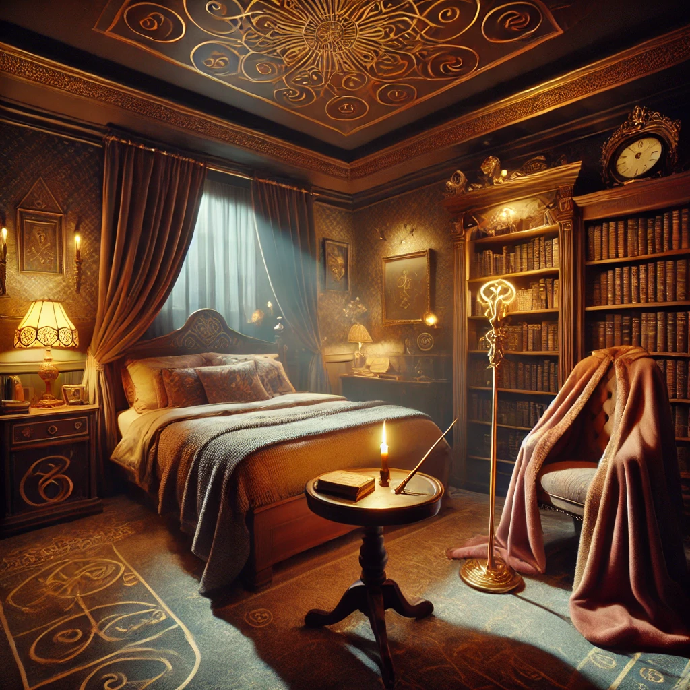

Synopsis du concept "Escape Dreams"
Escape Dreams est une expérience immersive où chaque nuitée devient une aventure unique. Ce concept novateur mêle la magie des nuits à thème ultra-réalistes et l'intensité de l’escape game, offrant aux visiteurs la chance de plonger dans des univers captivants inspirés de leurs héros favoris. Conçu pour les couples, les familles et les amis à la recherche d’une évasion hors du commun, Escape Dreams transporte chaque invité dans des mondes fantaisistes où énigmes et détails soignés créent un voyage mémorable.
Escape Dreams propose une immersion totale : laissez-vous emporter par des décors fascinants, des sons et des effets sensoriels qui donnent vie à chaque thème. Chaque nuit devient une histoire à part entière, à vivre et à résoudre.
À propos
Escape Dreams, un concept signé Sleep and Solve, est né en 2024, inspiré par l’engouement croissant pour les expériences insolites et immersives comme les nuitées atypiques et les escape games. Ce concept innovant allie hébergement unique et jeu d’évasion pour offrir aux passionnés d’aventures une expérience qui dépasse la simple nuitée. Un projet signé Sleep and Solve pour ceux qui cherchent à vivre le rêve éveillé.
Présentation du concept
Un mélange unique de nuit à thème et d’escape game : Escape Dreams s’adresse aux aventuriers en quête d’une expérience nouvelle et immersive. Ce concept propose de plonger dans des décors à thème hyper réalistes, pour vivre non seulement une nuit insolite mais aussi une aventure ludique.
Imaginez-vous dans le quotidien de vos héros favoris – baguette magique en main ou cape de chauve-souris sur les épaules – prêt à résoudre les mystères les plus fascinants. Escape Dreams, c’est une invitation à l’impossible : plongez dans l’univers de vos rêves et laissez chaque nuit devenir une aventure unique et inoubliable.
Un aperçu de l'expérience
Plongez dans un décor fascinant et préparez-vous à vivre une aventure unique.